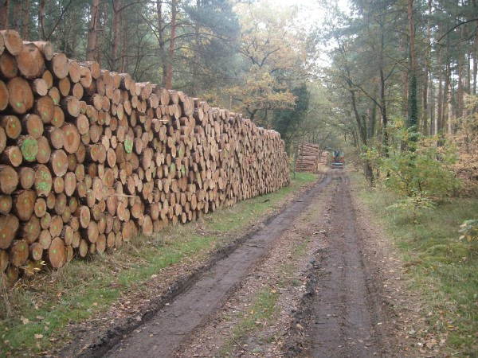

Holzernte
Ziel der Bewirtschaftung sind Z-Bäume (Z für Zukunft), die gutes Säge- und Wertholz liefern.

Eng gepflanzt, gerade gewachsen
Der Waldbauer unterscheidet verschiedene Nutzungsarten des Waldes. Zunächst werden bis zu 10.000 Bäume auf einen Hektar gepflanzt. Weil die Bäume eng stehen, wachsen sie nach oben, und es entsteht langes, gerades Stammholz.
Ohne diese Enge wachsen eher Parkbäume, die nicht hoch, sondern breit und astig werden. Der Waldbauer spricht dann von Protzen. Wirtschaftlich ist dieses Holz kaum zu gebrauchen, man kann es höchstens als Brennholz nutzen.
Durchforstung
Über die Jahrzehnte werden die Bäume größer, und 10.000 Stück passen nicht mehr auf einen Hektar. Deshalb wird alle paar Jahre gepflegt und durchforstet: Einzelne Bäume werden herausgesägt, damit die übrigen mehr Platz haben. Meist sind das die krummen und unterständigen Bäume.
Kernstück des Harvesters ist der Schneidkopf. Dieses Aggregat sägt den Baum ab, zieht den Stamm durch, entastet und vermisst ihn. Der Computer schlägt dem Fahrer die beste Aufteilung vor, und er bestätigt sie.

Rücken und Poltern
Nach der Ernte sammelt ein Rückezug, im Fachjargon Forwarder, das Holz ein. Er fährt durch den Bestand und poltert das Holz am Waldweg für den Abtransport in die Holzwerke auf.

Durchforstungszuwachs
Die verbleibenden Bäume danken die Durchforstung mit einem kräftigen Wachstumsschub, weil mehr Licht, Platz und Nährstoffe zur Verfügung stehen.
Unterlässt man die Durchforstung, etwa aus einem falschen Waldverständnis, kümmert der Bestand vor sich hin. Viele Bäume vertrocknen, die Anfälligkeit für Insekten und Krankheiten steigt stark. Nach Jahren lässt sich das kaum noch korrigieren: Wie will man einen Baum wieder gerade biegen, der sich auf der Suche nach Licht unter zwei anderen Kronen hindurchgeschoben hat?

Vorbereitung einer Folgekultur
Geht es nicht um eine Durchforstung, sondern um eine neue Kultur, wird der Oberbestand deutlich aufgelichtet, denn junge Bäume brauchen Licht. Danach wird die Fläche aufgeräumt, damit Platz für die Jungbäume bleibt. Das Grobe sammelt die Maschine ein und verarbeitet es zu Hackschnitzeln, der Rest ist Handarbeit.
Aus den Resten bilden wir Reisighaufen auf dicken Baumstümpfen. Dort kann man ohnehin nichts pflanzen, also geht kein Platz verloren.

Kleine Paradiese
Die Reisighaufen sind ein Rückzugsort für kleine Tiere und Reptilien. So mancher Hase versteckt sich darunter, und wir haben dort oft Reptilien gesehen.

Langholzernte
Langholz ernten wir nicht mit Maschinen, sondern vor allem von Hand. Die Bäume werden mit der Motorsäge gefällt und dann mit Schlepper und Rückezange zum Polter gezogen.

Holz direkt aus dem Wald
Ob ein Raummeter Kaminholz, Bohlen nach Maß oder ganze Lkw-Ladungen Rundholz: rufen Sie uns an, wir beraten Sie gern.
Kontakt aufnehmen